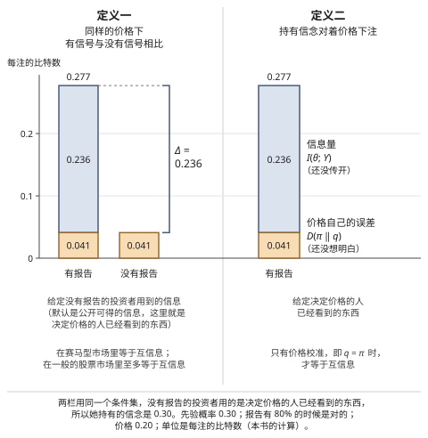

第 4 章 信息的价值
加密货币的拉盘（pump）群召集人们一起买入一种币，把它的价格推高；这类群大多通过 Telegram 或 Discord 联系成员（工作论文版）。在 Dhawan 与 Putniņš（2023）用来说明运作方式的那次拉盘里，管理者先公布交易所、日期和时间，不公布是哪种币；到了那个时间，发出“拉盘信号”，内容只是币名（工作论文版）。组织者公开宣布要拉盘；作者随机抽取了 70 次拉盘，手工整理它们的消息，其中没有一次带有任何暗示，说这种币的价格低于它的价值（工作论文版的数字）。先买的人赚钱时，手里没有关于币值的任何信息；他们知道的是别人马上要买（本书的判断）。1
4.1 事先宣布的拉盘
Dhawan 与 Putniņš 用手工收集的数据，在两家加密货币交易所七个月的记录里，找出 355 起拉盘砸盘（pump-and-dump）式的操纵（manipulation），即先拉盘、再抛售；其中 Binance 上 64 起，Yobit 上 291 起，时间从 2017 年 12 月 29 日到 2018 年 6 月 22 日（工作论文版的数字）。这些事件取自 Telegram 拉盘频道的聊天记录，只保留管理者明确说要拉这种币的那些（工作论文版）。平均而言，一次拉盘从发出信号到价格见顶约需八分钟，中位数（median）是 1.54 分钟，收益率为 65.47%；之后价格回到拉盘前的水平，作者认为这与他们的理论相符（工作论文版的数字）。作者估计，管理者在拉盘前的两小时里买入约 2,438 万美元的币，保守估计获利约 604 万美元，他们把这读作从跟随者到管理者的财富转移（工作论文版的数字）。2
在他们的框架里，每一笔订单都把价格推动同样的一步，发送订单时微小的随机延迟决定每个买家在队列里的位置，位置越靠后，付的价格越高（工作论文版）。事先不知道自己位置的参与者预期会亏，管理者则靠在信号之前买入获利（工作论文版）；只有排在队列前一半以内的买家预期能赚（本书的推导）。3
没有一条消息暗示币价偏低，这一发现只涵盖抽样的 70 次拉盘（工作论文版的数字）。作者写道，他们的证据提示一种赌博游戏，玩家争着抢在别人之前买入，又抢在别人之前卖出；管理者的利润是一个保守的估计（工作论文版）。4
用 表示交易者想知道的那件事，这里是这种币值多少。币名不带关于 的任何信息，所以按关于 的信息计价（4.2 节），这个信号一文不值，先买的人知道的是后来买家的订单（本书的判断）。给关于 的信息估值，要假设交易者持有到结算（holding to settlement），即一直持有资产，直到它按那件事的结果兑付，就像一份关于新药试验的合约按试验结果兑付；或者假设与 无关的交易对她来说不可预测（1.5 节）。拉盘里两条都不成立，因为没有人持有到结算，并且信号一发出，后来买家的订单就可以预测（本书的判断）。本书把这叫作关于他人订单流（order flow）的信息，订单流即他们的买单与卖单的净额。本章其余部分只计关于 的信息的价值（value of information），并以两条假设之一成立为前提。
4.2 价值的两种定义
定义一是在同样的价格下，交易者的财富有一个信号时比没有它时长得快多少。定义二是她在每个结果上按无抽水（margin-free odds）的赔率，即庄家不抽成的赔率，持有正确的信念（belief）对着价格下注时，财富长得多快；所以它也算进了价格自己的误差；有的下注者没有信号，但知道决定价格的人看到了什么，他也拿得到这一份。
对附加信息 ，例如世界上发生的事件或一个相关市场的走势，Barron 与 Cover（1988）把第一种定义为倍增率的增量 ；倍增率是财富最好的长期增长，以每期翻倍的次数计。本书拿 添的东西与没有它的投资者实际用到的东西相比，后者就是条件集（conditioning set）。它默认是公开可得的信息（publicly available information），即任何人想查就能查到的信息；如果她只看到其中一部分，就是那一部分。记 为收益，即每种资产一期结束时的价格与开始时的价格之比， 其中 是倍增率， 是互信息（mutual information），见 2.3 节。在一般的股票市场里，只有这个上界成立；每一比特（bit）信息至多让财富翻一倍；在 2.6 节的例子里，整整一比特什么也没添，因为有没有它，最好的组合都一样。
在赛马型市场（horse-race market）里，每个结果都有自己的一张合约，这个结果胜出时按它的赔率兑付；在这里，无论赔率是多少， 都等于互信息，上界是紧的。这个等式有五条前提。一是每个结果都能单独下注；二是全部财富都投入，或者赔率无抽水，这样按价格比例分散在各个结果上的钱就相当于现金；三是赔率不随信号改变，与 Kelly（1956）的设定一样；四是下注的人是价格接受者（price taker），她的下注不推动赔率；五是知道信号与结果的联合分布。它不要求价格校准（calibration），即价格等于正确的概率。把增长率读作价值，对一次性的机会要有对数效用（log utility），即按财富的对数来评价财富；对重复的机会，要独立地重复，并把赢的钱再投入（数学框 1.1）。5
定义二就是第 1 章的信息梯度（information gradient），在看到信号之前取平均： （数学框 1.1）。这里 是决定价格的人已经看到的东西， 是给定这些东西时的正确概率。第一项是还没传开的信息（undiffused information），即信号在他们已经看到的东西之外说了什么；第二项是还没想明白的信息（undigested information），即价格自己的误差。只有价格也是校准的，即 ，这个定义才等于信息量（amount of information）。本书的信息梯度采用这个定义，以决定价格的人已经看到的东西为参照，不以全部公开可得的信息为参照（第 10 章）。结果出来以后，对真相 和信念 ，事后实现的价值（realized value） 对只是自以为知情的人可以为负（1.4 节）。
两种定义只有在同一个条件集上才能直接比较。在同一个条件集上，赛马型市场里定义二比定义一恰好多 ，一般的市场里至少多这么多（本书的推导；数学框 4.1）。把定义二读作一种价值，需要每个结果都能单独下注（数学框 1.1）。第 1–5 章假定，人们据以交易的那件事与整个市场的风险无关，这样 就纯粹是错价；第 18 章把风险溢价（risk premium），即承担风险的回报，分离出来。
以第 2 章的新药报告为例，先验概率（prior probability）是 0.30，报告有 80% 的时候是对的（2.3 节），在无抽水的赔率下对成功或失败下注，相当于只有两匹马的赛马。在同一个条件集上，没有报告的下注者知道决定价格的人看到了什么，持有的信念是 0.30。价格为 0.30 时，两种定义都给出每注 0.236 比特。多次独立下注、赢的钱再投入时，有报告的下注者与没有报告的下注者，财富之比每注约乘以 ，即约多 18%（本书的计算）。价格为 0.20 时，定义一给出 0.236，定义二给出 0.277，多出的 0.041 是价格自己的误差。价格为 0.40 时，多出的是 0.031（本书的计算；图 4.1，表 4.1；数学框 4.1，在 4.12 节）。

表 4.1 三个价格下新药报告的价值（本书的计算）
| 价格 | 定义一，有报告减没有报告 | 没有报告， | 定义二，有报告 |
|---|---|---|---|
| 0.30 | 0.236 | 0 | 0.236 |
| 0.20 | 0.236 | 0.041 | 0.277 |
| 0.40 | 0.236 | 0.031 | 0.267 |
单位是每注的比特数，赔率无抽水，成功时为 ，失败时为 ；两种定义取在同一个条件集上，即决定价格的人已经看到的东西，所以没有报告的下注者持有的信念是 0.30（本书的计算）。
本书的默认假设（default assumption）见第 5 章 5.8 节的表 5.1，本章去掉其中两条，即无限注意（unlimited attention），也就是获取和处理信息不花钱（4.5 节），以及外生交易对手（exogenous counterparty），也就是出于信息以外的原因交易的人（4.4 节），4.5 节的例子还连同这两条一起去掉了第三条，即不从价格学习（表 5.2）；价格接受是两种价值定义的前提，4.6 节预先说明它不成立时会怎样，第 17 章去掉它。
4.3 持有到结算与重估前交易
3.4 节把先知（foreknowledge），即提前知道人人到时都会看到的事，称为单纯时间上的优势。Hirshleifer（1971）在一个市场完美、没有成本的模型里给出了数字；模型里的“代表性”个人有同样的信念、效用函数和禀赋，所以没有人交易，价格必须维持每个人的禀赋。两个未来状态里， 的禀赋较多，机会是 0.6， 的机会是 0.4；效用是对数的。
接着，有一个人私下、提前并且确定地得知，状态 将会出现。持有到结算时，由于他的选择几乎不影响价格，他按现行价格卖掉对状态 的求偿权，只有他知道这些求偿权一文不值。在重估之前交易（trading before revaluation），即 Hirshleifer 所说的投机（speculation）时，他改为按旧价格把全部财富换成对 的求偿权，预期在各人的决定最终定下之前，消息会公开，对 的求偿权的价格会上涨。对说出 或 的消息取平均，每条渠道都让他的期望效用增加 0.6730，第二条加在第一条之上；0.6730 奈特（nat），即 0.971 比特，是状态的熵（entropy），也就是哪个状态将会出现的不确定性（本书的计算）。6 数学框 4.1 说明为什么，也说明对不确定的信号两条渠道为什么不同（本书的推导）。
两条渠道都假设市场完美、对数效用、他是价格接受者，以及交易对手不从他的交易里推断出消息（本书的判断；4.4 节）；第二条还要求消息在消费决定之前公开。第二条渠道是第 3 章一个判断的实例，即信息的持有期短于消息公开所需的时间时，别人得知消息可能提高它的价值；Hirshleifer 的模型里只有一个价格接受的知情者（informed agent），对许多持有者一起离场的情形什么也没说（本书的判断）。
如果在决定作出之前向所有人公开，同样的消息会立即改变价格，每个人照旧消费，按消息平均的期望效用不变。这样的信息对整个社会没有价值；在纯交换（pure exchange），即没有生产的情形下，社会从获取或传播私人先知中什么也得不到（4.7 节）。
准确的信念在长期里也可能有回报，表现为更大的财富份额，但要有下面的前提；在单独一期里，信念更准的交易者可能做得更差（本书的判断）。在 Blume 与 Easley（2006）的模型里，在帕累托最优（Pareto optimal）的配置中，即任何改变都不能让某人变好而不让别人变差，并且各人的贴现因子（discount factor），即有多看重将来，彼此相同，信念最接近真相的人最终拿走全部资源，与对风险的态度无关，所以只要是完备市场（complete market），即每个状态都有一种证券，市场就会选中正确的信念；市场不完备时，这些结论可能不成立（工作论文版）。18.4 节讨论这种市场选择（market selection），即交易把错误的信念淘汰出去。7
4.4 无交易定理
Milgrom 与 Stokey（1982）的核心结果是无交易定理（no-trade theorem；1.6.3 节）。它说，无论制度怎样，如果初始配置是事前帕累托最优（ex ante Pareto optimal）的，私人信息（private information）就不能带来任何交易的动机；如果一笔交易可行、所有人都能接受，这一点是共同知识（common knowledge），那么弱风险厌恶（risk aversion）的交易者对它无所谓，严格风险厌恶的交易者不做任何交易。它的前提如下。
- 事前帕累托最优的配置，即在任何消息到来之前评判，没有哪笔交易能让某人变好而不让别人变差，排除了为保险或流动性（liquidity）而交易。
- 信念一致（concordant beliefs），即对每个状态下每个信号出现的可能性看法一致，允许各人的先验不同；共同先验（common prior）不是前提。
- 严格风险厌恶排除了弱风险厌恶的交易者仅仅觉得不比原来差的交易。
- 共同知识，即人人知道，人人知道人人知道，如此下去；一笔交易可行并且可以接受，这一点是共同知识，就排除了下文那种天真的推理；各人各自知道还不够。
- 现金流由外部决定，这排除了从交易条件中学习、并因此改变现金流的决策者；按 Bond、Edmans 与 Goldstein（2012）的转述，Bond 与 Eraslan（2010）证明了这样的决策者可以带来纯粹出于信息的交易（工作论文版）。
在 Milgrom 与 Stokey 的例子里，两位风险中性（risk neutrality）的交易者各自只知道抽到的信号落在几段中的哪一段，有人向他们提出一个一美元的赌局，赌两个状态中哪一个成立。就抽到的这个值而言，按天真的算法，每人都把自己赢的机会算作 2/3，于是接受；在理性预期（rational expectations）下，每人都推断对方的接受透露了什么，两人只在这个信号值上都接受，那时每人都无所谓，稍有风险厌恶的交易者就会拒绝。
4.3 节 Hirshleifer 的经济有对数效用，各人的禀赋和信念相同，满足前三条前提（本书的判断）。Milgrom 与 Stokey 指出，他关于以几乎不变的价格投机获利的论证，假设个人相对市场是“小”的；在理性预期下，“一个有新信息的交易者永远不是‘小’的”。所以每条渠道的 0.6730，是对着天真的交易对手得到的收益，这些对手不从他的交易里推断消息；无交易定理把它压到零，但只在它的全部前提都成立时如此（本书的判断）。
真实市场里一直有交易，是因为某条前提不成立，例如外生交易对手出于信息以外的原因交易，像应付赎回的基金或给收成做对冲的农户（本书的判断）。没有这样的对手，达不到理性预期的交易者照样交易，就像天真的情形。在 Dhawan 与 Putniņš 的框架里，参与者都一样时，信念正确的理性个人不参与拉盘，他们的证据提示一种赌博游戏（工作论文版；4.1 节）。赌博的动机可以在没有外生噪声交易者（noise trader）的情况下维持交易，噪声交易者即随机交易的人（本书的判断）。
在 Milgrom（1981）的拍卖里， 件相同的物品每件都按落选出价中最高的那个成交；一个竞价者的信息如果在至少 个对手各自知道的东西之外什么也没添，他对一件物品的估价又不高于他们，那么无论怎样出价，他都不能指望得到正的收益；用 Milgrom 的话说，“信息差的投机者只会亏”。交易能继续，是因为卖方扮演的角色纯粹是被动的，即外生交易对手（本书的判断）。信息的价值以决定价格的边际竞争者（marginal competitor）知道什么为参照（本书的判断）。8
4.5 要花钱的信息
按 Grossman 与 Stiglitz（1980）的论证（1.6.6 节），如果价格把知情者知道的东西传了出去，每个知情者都把价格当作给定，以为自己可以不再花钱买信息，也做得一样好；如果没有人知情，价格就什么也不显示，这时只要信息足够便宜，人人都想成为知情者。他们只在一个例子里证明了这一点，例子里的变量服从正态分布，对风险的厌恶不随财富变化（第 16 章）。在那里，风险资产的收益分成两部分，一部分花钱能看到，另一部分看不到；知情者看到前一部分，未知情者（uninformed agent）只看到价格；价格里唯一的噪声是这种资产人均供给的随机变动，即供给噪声（supply noise）。按他们的定理 5，没有供给噪声时，由价格接受的交易者构成的均衡（equilibrium）不存在，当且仅当成本低于一个界限；这个界限随信噪比（signal-to-noise ratio）上升，信噪比即能看到的部分与看不到的部分的方差之比，界限随风险厌恶下降；信息完美时，这样的均衡永远不存在。这个界限就是价格不含信息时这个信号的价值，即它关于收益的信息除以风险厌恶，以确定性等价（certainty equivalent），即与它值得一样多的那笔确定的金额来计（本书的推导；数学框 4.1）。
Milgrom（1981）认为，这种不存在，即 Grossman–Stiglitz 悖论（Grossman–Stiglitz paradox），根源大概在于价格接受的定义。他为说明这一点构造了一个特例，即一件物品的拍卖，价值和信号都服从均匀分布；在那里，每个竞价者面对的价格揭示了他所有竞争者的信息，但不揭示他自己的；信息无论成本多少，均衡都存在；这提示，均衡不存在需要一个交易者在价格里看到自己的信息，却把价格当作给定（本书的判断）。同一个拍卖与连续交易的市场不同；在这个拍卖里，如果所有竞价者都知情，有两个竞价者时，一个竞价者的期望利润约为物品最高可能价值的 0.096 倍，有十个竞价者时降到约 0.0046 倍，而唯一知情的竞价者的期望利润是这个价值的一半（本书的计算）；在这里，价格包含的信息越多，这份租越小，它始终大于零（本书的判断）。
在内点均衡（interior equilibrium）里，知情与未知情的交易者同时存在，期望效用相等。按他们的式 (13)，成为知情者的价值，以确定性等价计、未扣成本，等于信号在价格之外添的信息除以风险厌恶，所以对买或不买一个精度固定的信号而言，这时那份信息以奈特计等于风险厌恶乘以成本（本书的推导；数学框 4.1）。这个等式只涉及风险厌恶和成本；均衡时价格包含多少信息还取决于信噪比，两者都不取决于供给噪声。在 Verrecchia（1982）的模型里，交易者以凸的成本选择精度，供给噪声变小时，价格包含的信息变多；这与 Grossman 与 Stiglitz 不同，他们那里两个效应恰好抵消。
Admati 与 Pfleiderer（1990）讨论出售信息，他们写道，如果有任意正比例的交易者确切知道兑付，价格就完全揭示（full revelation），“信息没有价值，卖方的利润为零”；我们把这读作卖方一侧的悖论（本书的判断；第 15 章）。9
4.6 价格冲击与交易的价值
4.2 节的两种定义都假设交易者是价格接受者。在 Kyle（1985）的模型里（1.6.2 节；第 17 章），唯一一个风险中性的内幕交易者（insider），即有私人信息的交易者，藏在噪声交易者身后。他的期望利润等于噪声交易者的期望亏损，与他能藏身其中的噪声交易量成正比，而他的信息有多大比例进入价格，与噪声交易量无关。他的信息的价值与信息量脱钩；这种比例关系只对唯一一个风险中性、信息由外部给定的内幕交易者成立（本书的判断）。
在 Kyle（1989）的模型里，一个知情投机者如果认识到自己的价格冲击（price impact），即自己的交易把价格推动多远，就会像垄断者一样限制交易，使交易对他的私人信息反应更小；所以在不完全竞争（imperfect competition）下，“价格揭示的永远不超过知情投机者私人精度的一半”。两个投机者在价格显示的东西之外有同样多的信息，在 Kyle 的定理 10.1 适用的地方，知道自己的单会推动价格的那一个，从中得到的确定性等价比把价格当作给定的那一个少（本书的推导；数学框 4.1）；两种均衡揭示的量不同，所以比较时固定的是价格之外的信息量，不固定信号本身。噪声交易恰好为零、交易者又不是风险中性时，市场关闭，没有交易，也没有成交价；他的证明肯定不能直接套用到这种情形。所以，只有噪声交易为正时，不完全竞争才能避开 Grossman–Stiglitz 悖论（本书的判断）。10
4.7 私人价值与社会价值
社会价值（social value），即信息对整个经济的价值，只来自它改变了的实际决策，例如生产和投资。Hirshleifer（1971）写道，信息只有能影响行动才有价值，价格重估带来的财富转移纯粹是再分配。他的结果沿两条线展开，一条是私人还是公开，一条是纯交换还是有生产；保持私密的私人信息没有社会价值，而有生产时，关于哪个状态将会出现的公共信息（public information）有社会价值。信息梯度和 4.2 节的两种定义量的都是私人价值。
公共信息可能经由至少四条途径降低福利。
- 协调（coordination）。在 Morris 与 Shin（2002）的模型里，人们希望自己的行动既贴合基本面（fundamentals），又与彼此的行动一致；一个权重衡量第二种动机，即揣测别人，相对第一种动机有多重，这种动机是零和的，所以对社会没有效率；“公开”指信号的实现值是共同知识（工作论文版）。存在相互独立的私人信息时，更多的公共信息对福利的影响方向不定（工作论文版）。这个权重超过 0.5 时，有一些参数范围，在其中更精确的公共信息会降低福利，只有私人信息不太精确时，它才有帮助（工作论文版的数字；第 21 章）。
- 别人的行动。在 Bikhchandani、Hirshleifer 与 Welch（1992）的模型里，在第一个人作决定之前发布的公共信息，可能让一些人在事前的意义上变差，因为它除了直接提供信息，还改变了前面的人的决定以及这些决定传达的东西；他们的例子用的是噪声很大的公共信息（第 14 章）。
- 分配风险（distributive risk）。在纯交换下，如果真实状态在任何交易之前宣布，人们还持有各自的禀赋，那么对某个状态持有较多求偿权的人，无法确定消息会指向哪一边；Hirshleifer 说，这时风险厌恶的人宁愿消息不发布，消息即将发布，这个前景在哪个状态出现的风险之外，又添了分配风险。
- 分享变少。在 Duffie、Malamud 与 Manso（2009）的模型里，发给新进入者的公开信号会减少私人信息的分享；搜寻成本成比例时，在某些情形下还会降低按进入时刻评判的福利（第 19 章）。
Bond、Edmans 与 Goldstein（2012）把价格预测公司价值的能力叫作预测效率（forecasting price efficiency），把价格揭示有效的实际决策所需信息的程度叫作揭示效率（revelatory price efficiency）；他们转述 Dow 与 Gorton（1997）的观点，价格完全可能在第一种意义上有效，在第二种意义上无效（工作论文版）。信息梯度是一个预测型的量，量的是私人价值，它可以与揭示效率各自变动，因为二者预测的对象、用谁的信息、对着什么基准都不同（本书的判断；第 16 章）。11
4.8 物理的读法
麦克斯韦妖（Maxwell’s demon）是一个想象出来的、给分子分拣的生灵。在数学框 4.2 给每一条列出的条件下，定义一对应这个妖在一个温度下靠测量（measurement）并按测得的结果行动而能多提取的功；由一个妖持有全部测量结果时，定义二对应相对平衡分布（equilibrium distribution）可得的功，平衡分布即系统放着不管时最终处在各个状态的机会，在这里扮演价格的角色（本书的类比）。1.4 节把两件事对应起来，一是按 Kelly 准则（Kelly criterion）下注，即按自己的信念按比例押上全部本钱，二是 Szilard 机（Szilard engine），即由妖操作、只有一个分子的热机；这个对应分不出两种定义，因为热机每个循环都从平衡开始，就像赔率校准而且无抽水时的下注（本书的类比）。
在物理上，处理信息的成本在于测量和清空记忆（1.4 节；数学框 4.2）。清空一个两值等可能的比特，至少要放出 的热， 是温度 下典型的热运动能量；不过 Landauer 的推理“不保证这个最小值事实上可以达到”。
1.4 节在下注一侧没有找到扮演 的东西；只在形式上，风险容忍度（risk tolerance），即风险厌恶的倒数，扮演了它（本书的类比）。在 Grossman 与 Stiglitz 的模型里（4.5 节），价值是一个尺度乘以互信息；在赛马型市场里、对数效用下，近似如此；在物理里，价值至多如此（本书的推导；数学框 4.2）。这个对应至少在三处不成立（本书的判断）。 属于温度为 的环境，对每个部分都一样，由外部给定；风险容忍度是个人的偏好，在对数效用下就是一个人自己的财富。功守恒，可以相加；基于效用的金额不能在人与人之间相加。在物理里，同一个 也给信息的成本定价；Grossman 与 Stiglitz 的成本是由外部给定的一笔钱，所以 4.5 节的等式只在自由进入（free entry）下的均衡里成立，自由进入即任何人都可以付钱成为知情者；偏离均衡时，知情者可以赚得更多。12
4.9 本章引用的实证证据
Dhawan 与 Putniņš（2023）找出 2017 年 12 月 29 日至 2018 年 6 月 22 日 Binance 和 Yobit 上的 355 次拉盘，来源是 Telegram 的聊天记录，并手工整理了随机抽取的 70 次拉盘的消息（工作论文版的数字）。两家交易所、七个自然月的数据，对别的市场或别的年份说明不了多少（本书的判断）。其余各篇都是理论；本章自己的数都是算例。13
4.10 交易者的自查清单
没有一个问题说该买什么、卖什么，答得好也不能让一笔交易变得安全（本书的判断）。
- 价值还是别人的订单？ 优势来自资产的价值，还是来自别人即将下的订单（4.1 节）？可检验：在 Dhawan 与 Putniņš 研究的 355 次拉盘里，即两家交易所 2017 年和 2018 年的拉盘，价格回到了拉盘前的水平（工作论文版的数字）；只靠别人的订单推动的走势也应当反转（本书的推论），但交易清淡和过度反应（overreaction）也会使走势反转，所以这个检验需要一个基准（本书的判断）。
- 以什么为参照？ 核对：在同样的价格下，没有这个信号，你的交易会不会不一样（4.2 节）？在每个结果上、按庄家不抽成的赔率，持有正确的信念对着价格下注，平均而言也挣得价格自己的误差；有的下注者没有信号，但知道决定价格的人看到了什么，他同样挣得这一份（本书的推导；表 4.1）。
- 对方为什么交易？ 核对：说出它在信息以外的理由，例如保险或流动性（4.4 节）。如果没有这样的理由，并且无交易定理的其他前提都成立，对方就会拒绝。
- 还有谁能买到？ 核对：还有谁能得到这个信号，花多少钱（4.5 节）？在 Grossman 与 Stiglitz 的例子里，一个精度固定的信号，买的人与不买的人做得一样好时，它对买的人恰好值它的成本，以确定的金额计（本书的推导）。
- 你能交易多少？ 核对：你的订单会把价格推动多远（4.6 节）？在 Kyle（1989）的定理 10.1 适用的地方，价格之外同样多的信息，对推动价格的交易者比对价格接受者值得少（本书的推导；数学框 4.1）。14
4.11 小结
- Dhawan 与 Putniņš 研究了两家交易所 2017 年和 2018 年的 355 次拉盘，它们平均约八分钟见顶，随后跌回拉盘前的水平（工作论文版的数字）；币名没有说出币值的任何东西，先买的人知道后来买家的订单（本书的判断）。
- 在同样的价格下，一个信号的价值只在 4.2 节的五条前提下才等于它的信息量，在组合须投入全部财富、不能卖空的股票市场里至多等于这个量（数学框 4.1）；在每个结果上、按庄家不抽成的赔率，持有正确的信念对着价格下注，平均挣得决定价格的人已经看到的东西之外的信息，加上价格自己的误差。
- 在 Hirshleifer 的例子里，在 4.3 节的前提下，确定的私人消息靠持有到结算，平均让期望效用增加 0.6730，即状态的熵；靠在重估之前交易，再增加同样多（本书的计算）；4.4 节的前提全部成立时，它什么也不添（本书的判断）。
- 4.4 节的五条前提成立时，单凭私人信息构不成交易的理由，这五条前提里没有共同的起始信念；即使没有人出于别的原因交易，有些交易者不去推断别人的交易透露了什么，他们也照样交易。
- 在 Grossman 与 Stiglitz 的例子里，价格把知情者知道的东西传出去时，如果信息的成本低于 4.5 节的界限，价格接受者就找不到均衡；知情与未知情的交易者同时存在时，对一个精度固定的信号而言，价格没有传出去的那份信息以奈特计等于风险厌恶乘以成本（本书的推导）。
- 在 Kyle（1989）的定理 10.1 适用的地方，价格之外同样多的信息，对推动价格的交易者比对价格接受者值得少（本书的推导）。信息只经由它改变了的实际决策才有社会价值；在 4.7 节的条件下，公共信息可能降低福利。
- 在数学框 4.2 的条件下，两种定义在物理里都有对应，风险容忍度只在形式上扮演 的角色（本书的类比）。
4.12 写给量化读者的数学框
数学框 4.1 价值、上界与成本的符号形式
这里 是世界状态（state of the world）， 是信号， 是收益， 是价格隐含概率（price-implied probability），， 是后验概率（posterior probability）；除了写作 的以奈特计，对数都以 2 为底。Grossman 与 Stiglitz 的 在这里写作 ，Kyle（1989）的 写作 。15
定义一。 ，，在赛马里 。记没有 的投资者用到的信息为 ， （本书的推导），只要她是价格接受者，价格不随 改变，没有 时她按 投资；最后一个不等号另外用到给定 时 是马尔可夫链，即 只经由 影响 。
定义二。 （数学框 1.1）。取 时，它在赛马里比定义一多 ，在别处至少多这么多（本书的推导）。
两条渠道（本书的推导）。在对数效用、价格接受者、交易对手不做推断的情形下，持有到结算让期望对数财富增加 奈特；在重估之前交易，不加杠杆、全部押在一种求偿权上，增加 ，其中 是状态 的价格在消息之后与之前之比；这个量介于 与 之间，后者是关于重估带来的收益的信息，信号确定或只排除某些状态时，它落在下端。消息确定地指出状态 、Hirshleifer 的时间偏好参数取 1 时，每条渠道都让效用增加 ，平均起来就是熵，在他的例子里是 0.6730 奈特。
Grossman 与 Stiglitz。 按定理 5，没有噪声时均衡不存在的条件是 ，其中 ；这个条件就是 ，其中 （本书的推导）。按他们的式 (13)，成为知情者在扣除成本之前的价值，以确定性等价计，是 ；内点均衡的条件 变为 奈特（本书的推导），这是对买或不买一个精度固定的信号而言的。
价格冲击。 在 Kyle（1989）里， 和 是未知情与知情投机者的精度；对他的正态变量，，其中 是资产的价值， 是一位知情投机者的观测（本书的推导）。完全竞争时，知情投机者利润的确定性等价是 ，即他的式 (78) 中间的那个表达式，所以 ；不完全竞争时，他的式 (77) 和式 (20) 给出 （本书的推导），其中 是他的垄断力指数。这需要至少两个知情投机者、至少一个未知情投机者，以及 ，即价格向一位知情投机者揭示其他知情投机者私人精度的一部分；他对不完全竞争模型的存在性结果，强烈依赖未知情投机者的自由进入。
这些表述的严格写法和证明都在附录里。
数学框 4.2 热力学里的信息价值
本框里的信息以奈特计， 乘以奈特数是能量（数学框 2.2）。这些对应是本书的类比。16
Kelly 下注与 Szilard 机。 1.4 节的对应（Vinkler、Permuter 与 Merhav 2016）需要各个循环相互独立、完全相同，隔板准静态地移动，不计擦除的代价，并且妖知道自己的测量怎样出错（数学框 1.1）。
定义一。 在一个温度下，有反馈（feedback）时（Sagawa 与 Ueda 2008）， 其中 是平衡态的自由能（free energy）从起点到终点的变化， 是得到的信息，对经典测量就是互信息。当且仅当反馈完美、终态是正则分布（canonical distribution），即在那个温度下处于平衡时，等号成立；没有信息时，这个上界退化为 。
定义二。 对 做理想测量 ，按测量结果平均（数学框 2.2），至多能提取 （Esposito 与 Van den Broeck 2011；Parrondo 2023），与 逐项对应（本书的推导）。这需要一个温度，起点和终点的平衡自由能相等，终态处于平衡并且以可逆的方式到达，控制丰富到可能需要无穷多个参数，不计测量和复位的代价，并且由一个妖持有全部测量结果，就像一个汇集了全部信号的假想交易者。
事后。 设一个过程对妖的信念 是可逆的，无论从真相 还是从 出发都终止于平衡，起点和终点的平衡自由能相等；对这样的过程，事后实现的价值对应失配代价（mismatch cost），即 与 不同时多出的耗散， 不排除任何状态时这个对应是精确的（Kolchinsky 与 Wolpert 2017；数学框 1.1）。
成本。 测量装置从一个标准状态出发时，测量可以是可逆的，不可逆的一步是之后把装置复原（Bennett 1982）。在等温的反馈循环里，测量、反馈和复位记忆时对系统做的总功从不为负，这使热力学第二定律（second law of thermodynamics）重新成立（Parrondo 2023；数学框 2.2）。
尺度乘以信息。 在物理里，价值至多是 ；在 Grossman 与 Stiglitz 的模型里是 ，风险容忍度为 （数学框 4.1）；在对数效用下，期望对数财富增加 奈特，会把确定性等价从财富 提高到 ， 小时约提高 ，所以 扮演 的角色（本书的推导）。
本章文献
本章引用的文献。所读版本不是期刊版的，条目里写明读的是哪个版本；尾注里的页码按所读的版本。
- Admati, A. R., and P. Pfleiderer (1990). Direct and Indirect Sale of Information. Econometrica 58(4): 901–928.
- Barron, A. R., and T. M. Cover (1988). A Bound on the Financial Value of Information. IEEE Transactions on Information Theory 34(5): 1097–1100.
- Bennett, C. H. (1982). The Thermodynamics of Computation—A Review. International Journal of Theoretical Physics 21(12): 905–940.
- Bikhchandani, S., D. Hirshleifer and I. Welch (1992). A Theory of Fads, Fashion, Custom, and Cultural Change as Informational Cascades. Journal of Political Economy 100(5): 992–1026.
- Blume, L., and D. Easley (2006). If You’re So Smart, Why Aren’t You Rich? Belief Selection in Complete and Incomplete Markets. Econometrica 74(4). 所读为 2001 年 8 月的 Cowles 基金会讨论稿 1319；没有核对期刊版。
- Bond, P., A. Edmans and I. Goldstein (2012). The Real Effects of Financial Markets. Annual Review of Financial Economics 4. 所读为 2011 年 12 月的 NBER 工作论文 17719；没有核对期刊版。
- Bond, P., and H. Eraslan (2010). Information-Based Trade. Journal of Economic Theory 145(5): 1675–1703. 没有读；按 Bond、Edmans 与 Goldstein（2012）的转述介绍。
- Dhawan, A., and T. J. Putniņš (2023). A New Wolf in Town? Pump-and-Dump Manipulation in Cryptocurrency Markets. Review of Finance 27(3). 所读为 2020 年 11 月 16 日的工作论文；没有核对期刊版。
- Dow, J., and G. Gorton (1997). Stock Market Efficiency and Economic Efficiency: Is There a Connection? Journal of Finance 52(3): 1087–1129. 没有读；按 Bond、Edmans 与 Goldstein（2012）的转述介绍。
- Duffie, D., S. Malamud and G. Manso (2009). Information Percolation with Equilibrium Search Dynamics. Econometrica 77(5): 1513–1574. 所读为 arXiv 预印本 0811.3023v1；没有核对期刊版。
- Esposito, M., and C. Van den Broeck (2011). Second Law and Landauer Principle Far from Equilibrium. EPL 95: 40004. 所读为 arXiv 预印本 1104.5165v2。
- Grossman, S. J., and J. E. Stiglitz (1980). On the Impossibility of Informationally Efficient Markets. American Economic Review 70(3): 393–408.
- Hirshleifer, J. (1971). The Private and Social Value of Information and the Reward to Inventive Activity. American Economic Review 61(4): 561–574.
- Kelly, J. L. (1956). A New Interpretation of Information Rate. Bell System Technical Journal 35(4): 917–926. 所读为保留期刊页码的重新排印本。
- Kolchinsky, A., and D. H. Wolpert (2017). Dependence of Dissipation on the Initial Distribution over States. Journal of Statistical Mechanics: Theory and Experiment. 所读为 arXiv 预印本 1607.00956v5。
- Kyle, A. S. (1985). Continuous Auctions and Insider Trading. Econometrica 53(6): 1315–1335.
- Kyle, A. S. (1989). Informed Speculation with Imperfect Competition. Review of Economic Studies 56(3): 317–356.
- Landauer, R. (1961). Irreversibility and Heat Generation in the Computing Process. IBM Journal of Research and Development 5(3): 183–191.
- Milgrom, P. R. (1981). Rational Expectations, Information Acquisition, and Competitive Bidding. Econometrica 49(4): 921–943.
- Milgrom, P., and N. Stokey (1982). Information, Trade and Common Knowledge. Journal of Economic Theory 26(1): 17–27.
- Morris, S., and H. S. Shin (2002). Social Value of Public Information. American Economic Review 92(5). 所读为 2001 年 7 月的 Cowles 基金会讨论稿 1312，题为“The CNBC Effect: Welfare Effects of Public Information”；没有核对期刊版。
- Parrondo, J. M. R. (2023). Thermodynamics of Information. 将收入 Encyclopedia of Condensed Matter Physics 第二版。所读为 arXiv 预印本 2306.12447v1。
- Sagawa, T., and M. Ueda (2008). Second Law of Thermodynamics with Discrete Quantum Feedback Control. Physical Review Letters 100: 080403. 所读为 arXiv 预印本 0710.0956v3。
- Verrecchia, R. E. (1982). Information Acquisition in a Noisy Rational Expectations Economy. Econometrica 50(6): 1415–1430.
- Vinkler, D. A., H. H. Permuter and N. Merhav (2016). Analogy Between Gambling and Measurement-Based Work Extraction. Journal of Statistical Mechanics: Theory and Experiment: 043403. 所读为 arXiv 预印本 1404.6788v3。
注释
1. Dhawan 与 Putniņš（2023）所读为 2020 年 11 月 16 日的工作论文；没有核对 Review of Finance 的版本，页码按工作论文：公告与拉盘信号在 §2.1，第 7 页；通讯平台在 §2.2，第 8 页，抽样的 70 次拉盘和对它们消息的解读在第 9 页；公开宣布意图在摘要，第 1 页。
2. Dhawan 与 Putniņš（2023），工作论文：手工收集的案例在第 2 页，摘要里写作七个月里至少 355 起；聊天记录和保留的事件在 §4.1，第 24 页；按交易所分的样本及其日期，以及管理者的买入和利润，在 §4.2，第 25 页，财富转移在第 25–26 页；拉盘的持续时间和收益率在第 26 页；价格回到拉盘前的水平在第 35 页。
3. Dhawan 与 Putniņš（2023），工作论文：线性的价格冲击在第 13 页；队列和买入价格在 §3.2，第 13 页；预期亏损、它的两部分和管理者的优势在 §3.3，第 15 页。一个参与者的预期亏损，是往返交易（round trip）的成本加上管理者最初价格冲击的一半。本书的推导：排在第 位的买家付 ，其中 是管理者买入 个单位之后的价格。退出的位置与进入的位置相互独立时，对 个参与者，退出价格在 到 之间均匀分布，作者写作 ，因为他们处理的是群里全部 个成员都参与的情形；于是这个买家的期望利润是 ，只在 时为正，对各个位置取平均是 ，即他们的式 (1)。在他们的基准示例里，，（§3.2，第 14 页），前 44 个位置赚钱。
4. Dhawan 与 Putniņš（2023），工作论文：抽样的 70 次拉盘在第 9 页；赌博游戏在 §6，第 38 页；利润的估计在 §4.2，第 25 页。
5. Barron 与 Cover（1988）：收益在 §I，第 1097 页；附加信息、重复投资和倍增率的增量在 §II，第 1097 页；上界即定理 2，在 §V，第 1098 页；摘要，第 1097 页；赛马和 2.6 节的例子在 §VII，第 1099–1100 页。Kelly（1956），所读为保留期刊页码的重新排印本：原来的赔率在第 918 页；赛马场不抽成的赔率和留着不下注的钱在第 922 页；再投入在结论，第 926 页。
6. Hirshleifer（1971），期刊版：完美、没有成本的市场在第 561 页；代表性个人、禀赋、价格和表 1 在 §III，第 563–564 页；知情的个人和表 2 在第 564 页，连同对整个社会的价值；公共信息和表 3 在第 565 页；投机和社会的收益在第 565 页，表 4 在第 566 页。在他的例子里，状态 的禀赋是 200，状态 的是 80；对它们的求偿权价格分别是 0.3 和 0.5，每个人的财富是 200，其中 100 在今天。期望效用是 9.5370。投机时，知情的个人预期对 的求偿权价格涨到 0.5，他的财富涨到 333.3。他的表对说出 或 的消息取平均，两者的机会是 0.6 和 0.4；按这个平均，期望效用在第一条渠道下升到 10.2100，在第二条渠道下升到 10.8830，给定消息说出 时则是 10.4143 和 10.9251；消息公开时，期望效用停在 9.5370。10.2100 − 9.5370 与 10.8830 − 10.2100 这两个差都是 0.6730（本书的计算）。
7. Blume 与 Easley（2006）所读为 Cowles 基金会讨论稿 1319；没有核对 Econometrica 的版本，页码按讨论稿：不完备的市场在摘要；帕累托最优的配置、贴现因子、风险态度、信念和完备市场在 §1，第 2 页。
8. Milgrom 与 Stokey（1982），期刊版：核心结果、保险动机和共同知识在 §1，第 17–18 页；风险厌恶和信念一致在 §2，第 20 页；定理 1，第 21 页；例子在 §2，第 22–24 页；“小”的个人在 §5，第 26 页。例子里的信号是 ，交易者 1 得知 是 1 或 2、3 或 4，还是 5，交易者 2 得知它是 1、2 或 3，还是 4 或 5，先验概率取他们第 23 页的表 I。交易者 1 在状态为 1 时赢得这一美元，得知 是 3 或 4 时，他把这个机会算作 0.20 除以 0.30，即 2/3；交易者 2 在状态为 2 时赢，得知 是 2 或 3 时，同样把机会算作 2/3（本书的计算）。在理性预期下，交易者 1 在 1 或 2 以及 5 时会拒绝，交易者 2 在 1 以及 4 或 5 时会拒绝，所以两人都接受的赌局只能在 时生效。在他们的中间情形，即一阶推理里，交易者 1 看到，无论 是 3 还是 4，交易者 2 都会接受，所以对方接受没有告诉他新的东西，他就接受。这时，每个人都可能知道两人都能接受这个赌局，同时这一点不是共同知识。Bond 与 Eraslan（2010）按 Bond、Edmans 与 Goldstein 在他们综述 §IV.E 里的转述引用，所读为 2011 年 12 月的 NBER 工作论文 17719，第 18 页；我们没有读 Bond 与 Eraslan 的论文。Dhawan 与 Putniņš（2023），工作论文：结果 1，以及紧接着问参与者不都一样时会怎样的一句，在 §3.3，第 16 页；赌博游戏在 §6，第 38 页。Milgrom（1981），期刊版：拍卖在 §1，第 923–924 页；条件 (4.6) 和 (4.7)，他称为“混淆”（garbling）条件和“无交易动机”（no transactions motive）条件，以及定理 4.4，在 §4，第 933 页；信息差的投机者和被动的卖方在 §7，第 940 页。
9. Grossman 与 Stiglitz（1980），期刊版：收益的两部分和两类交易者在 §I，第 393 页；例子在第 395 页；噪声在第 396 页；式 (13)–(15)，第 398 页；信噪比 、式 (16b) 和式 (19b)，第 399 页；定理 4，第 400 页；定理 5 及其说明，第 401 页。按式 (19b)，均衡时价格的信息含量 满足 ，其中 是绝对风险厌恶系数， 是成本。Milgrom（1981），期刊版：价格接受在 §1，第 922–923 页；揭示信息的例子在 §5，第 934–936 页。本书的计算用的是这个例子：物品的价值在零到 之间均匀分布，每个信号在零到这个价值之间均匀分布，出价按他的式 (5.3)。有 个知情竞价者时，信号最高的竞价者胜出，付信号第二高者的出价；取 ，对这个信号和价值做数值积分，2、3、5 和 10 个竞价者时的期望利润分别是 0.0959、0.0452、0.0174 和 0.0046， 大时接近 （本书的计算）。对每个 利润都为正，因为式 (5.3) 的出价是给定 个信号中最高的等于自己的信号时的期望价值，并且胜出者的信号高于第二高的信号（本书的推导）。唯一知情的竞价者预期得到物品的期望价值，即 。Verrecchia（1982），期刊版：信息的成本在 §2，第 1416 页；推论 3 以及与 Grossman 和 Stiglitz 的对比在 §6，第 1425 页。Admati 与 Pfleiderer（1990），期刊版，§3，第 905 页，转述的是 Admati 与 Pfleiderer（1986），我们没有读这篇。
10. Kyle（1985），期刊版：三类交易者和用来掩护的噪声交易在摘要，第 1315 页，那里还说连续交易结束时全部私人信息都已进入价格；一轮交易无论噪声交易多少，都把一半私人信息放进价格，在 §2，第 1319 页；期望利润在 §4，第 1330 页，等于 ，即资产价值的标准差乘以噪声交易的标准差。Kyle（1989），期刊版：垄断式地限制交易和一半的上限在 §7，第 334 页；噪声交易为零在 §7，第 335 页；定理 10.1 在 §10，第 342 页。
11. Hirshleifer（1971），期刊版：信息与行动在 §III，第 564 页；有生产时的公共信息在 §IV，第 567 页；分配风险在 §V，第 568 页；货币效果（pecuniary effects）在 §VII，第 571 页；保持私密的私人信息在 §VIII，第 573 页。Morris 与 Shin（2002）所读为 2001 年 7 月的 Cowles 基金会讨论稿 1312，题为“The CNBC Effect: Welfare Effects of Public Information”；没有核对 American Economic Review 的版本，页码按讨论稿：设定和两种情形在摘要；揣测别人的权重和它的零和性质在 §2，第 8 页；“公开”的含义在 §2.1，第 9 页；权重超过 0.5 在 §3，第 16 页。Bikhchandani、Hirshleifer 与 Welch（1992），期刊版：结果 2 及其例子在 §III.A.1，第 1005 页。Duffie、Malamud 与 Manso（2009）所读为 arXiv 预印本 0811.3023v1；没有核对 Econometrica 的版本，这些说法在预印本的摘要和第 7 节。Bond、Edmans 与 Goldstein（2012），工作论文：价格效率的两个概念在 §II，第 9 页，他们在那里转述 Dow 与 Gorton 的观点；我们按他们的转述引用，Dow 与 Gorton（1997）的细节取自他们的文献表。
12. 本节和数学框 4.2 引用的五篇论文所读为 arXiv 预印本，没有核对正式发表的版本：Vinkler、Permuter 与 Merhav，arXiv:1404.6788v3（Journal of Statistical Mechanics，2016）；Sagawa 与 Ueda，arXiv:0710.0956v3（Physical Review Letters，2008）；Esposito 与 Van den Broeck，arXiv:1104.5165v2（EPL，2011）；Kolchinsky 与 Wolpert，arXiv:1607.00956v5（Journal of Statistical Mechanics，2017）；Parrondo，arXiv:2306.12447v1（Encyclopedia of Condensed Matter Physics 第二版的一个条目）。节号、式号和页码按预印本。Vinkler、Permuter 与 Merhav：不计擦除的代价在 §1，第 3 页；热机及其产出的功在 §3，第 5–6 页；把热机看作一次公平的赌局在 §4，第 7 页，我们把它写成赔率校准而且无抽水的下注。Sagawa 与 Ueda，第 3 页。Esposito 与 Van den Broeck，第 2–3 页。Kolchinsky 与 Wolpert：他们的主要结果，即式 (10)，第 4 页，他们的 对应本书的 。Parrondo，§6，第 9 页。Landauer（1961）的 §4 第 187 页和 Bennett（1982）的 §5 第 927 页，所读为期刊版。
13. Dhawan 与 Putniņš（2023），工作论文：按交易所分的样本及其日期在 §4.2，第 25 页；聊天记录在 §4.1，第 24 页；抽样的 70 次拉盘在 §2.2，第 9 页。
14. Dhawan 与 Putniņš（2023），工作论文：按交易所分的样本及其日期在 §4.2，第 25 页；价格回到拉盘前的水平在第 35 页。Grossman 与 Stiglitz（1980），期刊版：式 (13)，第 398 页。Kyle（1989），期刊版：定理 10.1 在 §10，第 342 页。
15. Barron 与 Cover（1988）：式 (10)，第 1097 页；定理 2，式 (22)，第 1098 页；式 (42)，第 1100 页。Hirshleifer（1971）：表 2，第 564 页，表 4，第 566 页。Grossman 与 Stiglitz（1980），期刊版：式 (13)–(15)，第 398 页；式 (16)，第 399 页；定理 5，第 401 页。Kyle（1989），期刊版：精度即式 (14)，以及价格揭示的其他知情投机者精度的份额，在 §4，第 324 页；式 (20)，推论 4.2，第 325 页；垄断力指数在 §7，第 335 页；定理 10.1、式 (77) 和 (78) 以及自由进入，在 §10，第 342 页。式 (78) 印出了三个表达式，本框只用中间那一个；按式 (20)，最后一个在对数里少了 1 这一项，第一个也与中间那个不同（本书的推导）。
16. Sagawa 与 Ueda：自由能之差在他们的式 (1) 之后，第 1 页；经典测量在式 (9) 之后，第 2 页；不等式 (14)、没有信息的情形和等号成立的条件在第 3 页，等号条件他们是对不等式 (12) 说的，(14) 是它只有一个热库时的情形。Esposito 与 Van den Broeck：式 (11)，第 2 页；两个条件和构造，第 3 页。Parrondo：完成一个等温过程（isothermal process）所需的功在 §3，第 5 页，我们称它为对系统做的功；等温的反馈过程在 §4，第 5 页；式 (27)，第 6 页；式 (42) 和重新成立的第二定律在 §6，第 9 页。标为本书的推导的那些说法，这些论文里没有。